Connexion & Inscription
Accedez a votre exploitation ou creez un nouveau compte
Se connecter
Rendez-vous sur la page de connexion et saisissez votre adresse email et votre mot de passe.

Creer un compte
Deux types de comptes sont disponibles :
- Proprietaire de ferme : Vous creez votre exploitation. Vous choisissez le nom de votre ferme et devenez administrateur.
- Travailleur : Vous rejoignez une ferme existante avec un code d'invitation fourni par le proprietaire.

- Choisissez votre type de compte : Je cree ma ferme ou J'ai un code d'invitation
- Remplissez vos informations personnelles (nom, email, mot de passe)
- Pour un proprietaire : saisissez le nom et la description de votre ferme
- Pour un travailleur : collez le code d'invitation recu
- Cliquez sur Creer mon compte
Tableau de bord
Vue d'ensemble de votre exploitation agricole
Le tableau de bord affiche en un coup d'oeil :
- Statistiques cles : nombre de parcelles, cultures en cours, cheptel, logs recents
- Graphiques : evolution des activites, repartition des cultures
- Modules rapides : acces direct aux sections les plus utilisees
- Taches recentes : derniers logs et interventions

Assets — Parcelles
Gerez vos parcelles, terres et unites de production
La page Assets liste tous vos actifs agricoles. Utilisez les filtres et le bouton Nouveau pour ajouter une parcelle.

Creer une parcelle
- Cliquez sur Nouveau puis selectionnez le type land
- Saisissez le nom (ex: "Parcelle Arachide Nord"), la superficie en hectares
- Ajoutez les coordonnees GPS (latitude, longitude) pour la cartographie
- Ajoutez une description et des notes si necessaire
- Cliquez sur Creer

Cultures
Suivi des cultures et plantations en cours
Gerez vos cultures actives avec la variete, le cycle cultural et la saison.

Ajouter une culture
- Depuis la page Cultures, cliquez sur Nouveau
- Selectionnez le type Culture
- Renseignez : nom, type de culture, variete
- Indiquez les dates de plantation et de recolte prevue
- Renseignez l'ecartement entre rangs, entre plants et la densite
- Validez avec Creer l'asset

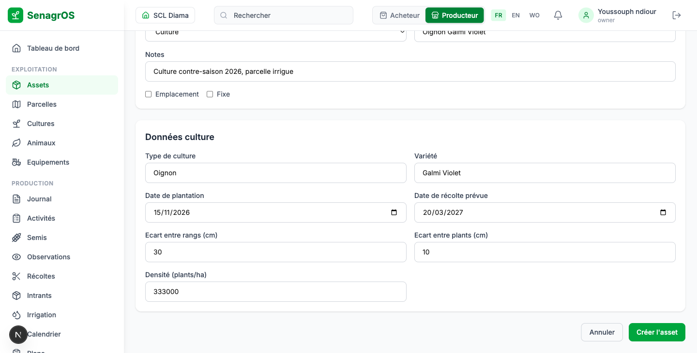
Animaux
Gestion du cheptel et de l'elevage
Suivez votre cheptel : bovins, ovins, caprins, volailles, etc.

Ajouter un animal
- Cliquez sur Nouveau
- Selectionnez le type Animal
- Renseignez le nom (ex: Troupeau Bovins N'Dama)
- Ajoutez des notes detaillees (race, nombre de tetes, type d'elevage, zone)
- Cliquez sur Creer l'asset

Equipements
Inventaire du materiel agricole
Enregistrez vos equipements : semoirs, tracteurs, pulverisateurs, etc.

Ajouter un equipement
- Cliquez sur Nouveau
- Selectionnez le type Equipement
- Renseignez le nom, le type d'equipement, la marque et le modele
- Indiquez le numero de serie, la date d'achat et le prix (FCFA)
- Cliquez sur Creer l'asset

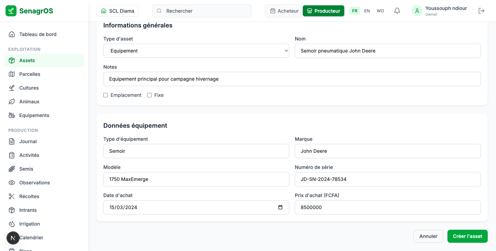
Intrants
Gestion des stocks phytosanitaires, engrais et semences
Le module Intrants gere 3 categories de produits :
| Categorie | Sous-categories | Champs specifiques |
|---|---|---|
| Phytosanitaires | Herbicide, Fongicide, Insecticide, Acaricide, Nematicide, Molluscicide, Regulateur, Adjuvant | Matiere active, DAR (jours), Classe toxicite, Dose recommandee |
| Engrais | Mineral, Organique, Amendement calcique, Oligo-elements, Biostimulant | Composition NPK, Dose recommandee, Forme |
| Semences | Certifiee, Paysanne, Hybride, OGM | Variete, Taux germination, PMG, Origine |

Ajouter un phytosanitaire
- Cliquez sur + Nouveau
- Selectionnez la categorie Phytosanitaire
- Choisissez la sous-categorie (ex: Herbicide)
- Remplissez : nom, nom commercial, matiere active, dose, DAR, classe toxicite
- Renseignez le stock initial, l'unite (L, kg), le prix et le seuil d'alerte
- Validez avec Creer l'intrant

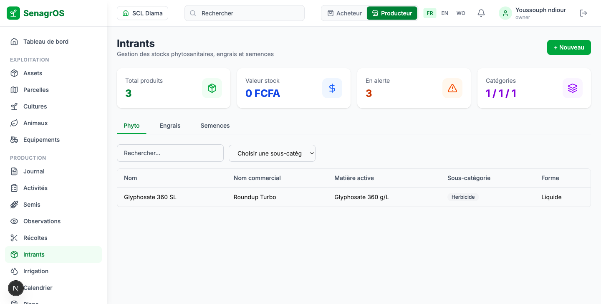
Ajouter un engrais
- Selectionnez la categorie Fertilisation
- Choisissez la sous-categorie (ex: Engrais mineral)
- Renseignez la composition NPK (ex: 15-15-15)
- Indiquez le stock en kg et le prix unitaire en XOF


Semences

Ajouter une semence (Asset)
Les semences peuvent aussi etre enregistrees comme assets dans le module Assets :
- Allez dans Assets > Nouveau
- Selectionnez le type Semence
- Renseignez : culture, variete, n° de lot, taux de germination, provenance
- Indiquez le traitement applique et la certification
- Cliquez sur Creer l'asset
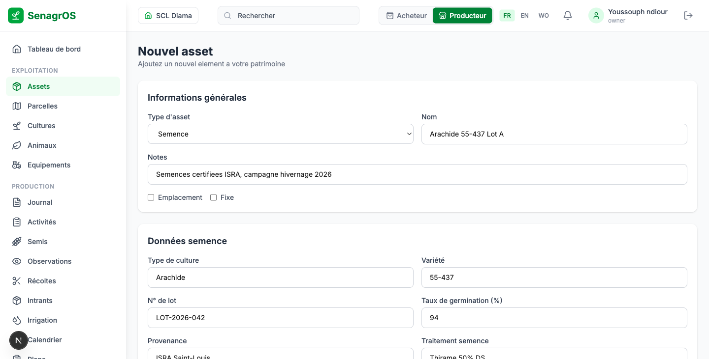
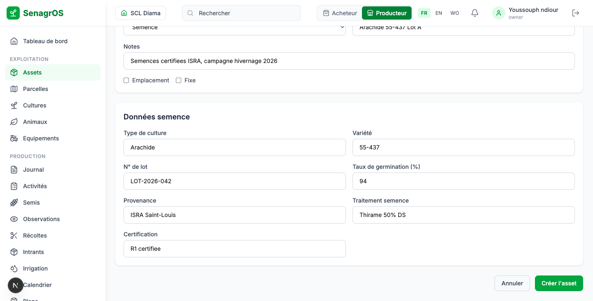
Journal d'activites
Historique complet de toutes les interventions sur l'exploitation
Le journal centralise tous les logs : activites, semis, irrigation, recoltes, observations, soins, etc.

Chaque log peut etre filtre par :
- Type : Activite, Semis, Irrigation, Recolte, Observation, Application intrant, etc.
- Statut : En attente, Termine, Annule
- Periode : Date debut / fin
Types de logs disponibles
| Type | Usage | Champs specifiques |
|---|---|---|
| Activite | Travaux generaux | Duree, description |
| Semis | Mise en terre | Methode, profondeur, ecartements, densite |
| Irrigation | Arrosage | Methode, duree (min), volume (L) |
| Recolte | Collecte | Quantite, qualite, parcelle |
| Application intrant | Traitement | Produit, dose, surface |
| Observation | Suivi terrain | Type d'observation, resultats |
| Maintenance | Entretien materiel | Equipement, intervention |
| Soin medical | Sante animale | Animal, traitement |
Creer un log d'activite
- Allez dans Journal > Nouveau
- Le type Activite est selectionne par defaut
- Remplissez le nom, la date, le statut et les notes
- Dans Details activite : duree (heures) et description
- Assignez le materiel et le personnel si necessaire
- Cliquez sur Creer le log

Semis
Enregistrer les operations de semis avec details techniques
Creer un log de semis
- Allez dans Journal > Nouveau
- Selectionnez le type Semis
- Remplissez les informations generales : nom, date, statut
- Dans la section Details du semis :
- Type de semis : Manuel ou Machine
- Profondeur de semis (cm)
- Ecartement entre lignes (cm)
- Ecartement entre plants (cm)
- Densite de semis (kg/ha ou plants/ha)
- Optionnel : assignez des equipements et du personnel
- Cliquez sur Creer le log

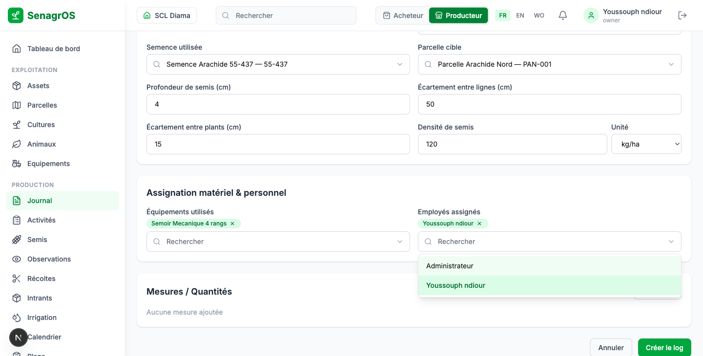
Application d'intrant
Enregistrer les traitements phytosanitaires et fertilisations
Creer un log d'application intrant
- Allez dans Journal > Nouveau et selectionnez Application intrant
- Choisissez le type d'intrant : Phytosanitaire, Fertilisant ou Semence
- Indiquez la sous-categorie (Herbicide, Fongicide, etc.)
- Renseignez la dose, l'unite (L/ha, kg/ha), la methode d'application
- Indiquez la surface traitee en hectares
- Cliquez sur Creer le log

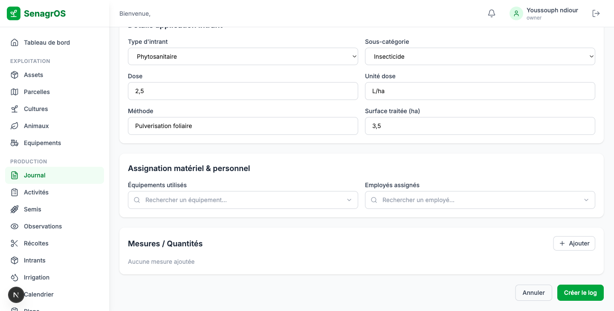
Irrigation
Suivi des arrosages et de la consommation d'eau
Enregistrer une irrigation
- Allez dans Journal > Nouveau et selectionnez Irrigation
- Selectionnez la methode d'irrigation dans la liste deroulante :
- Goutte-a-goutte
- Aspersion
- Gravitaire (submersion)
- Micro-aspersion
- Pivot central
- Systeme californien
- Manuel (arrosoir/seau)
- Autre (preciser) — un champ libre apparait pour decrire votre methode
- Indiquez la duree en minutes et le volume en litres
- Selectionnez la source d'eau (forage, puits, riviere, bassin, citerne, reseau)
- Optionnel : renseignez le debit de pompe (L/min)
- Cliquez sur Creer le log
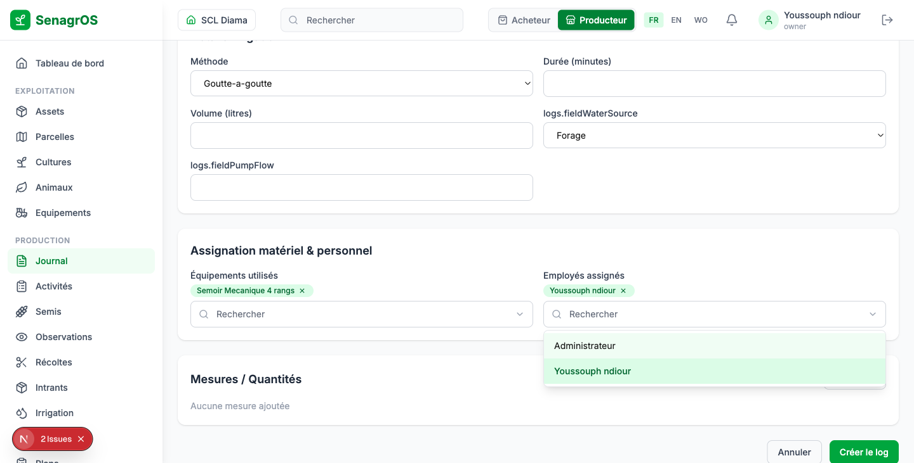


Maintenance
Suivi de l'entretien du materiel agricole
Enregistrer une maintenance
- Allez dans Journal > Nouveau et selectionnez Maintenance
- Donnez un nom descriptif (ex: Revision semoir pneumatique JD-1750)
- Dans la section Details maintenance :
- Type de maintenance : Revision preventive, Reparation, Vidange, etc.
- Cout (FCFA) : montant de l'intervention
- Ajoutez des notes detaillees sur les pieces changees et le travail effectue
- Cliquez sur Creer le log

Soin medical
Suivi sanitaire du cheptel
Enregistrer un soin medical
- Allez dans Journal > Nouveau et selectionnez Soin medical
- Donnez un nom descriptif (ex: Vaccination bovins troupeau Nord)
- Dans la section Details soin medical :
- Traitement : nom du medicament ou vaccin administre
- Veterinaire : nom du praticien intervenant
- Ajoutez des notes (nombre de tetes traitees, posologie, rappels prevus)
- Cliquez sur Creer le log

Observations
Fiches d'observation terrain : densite, stades, ravageurs, agreage
4 types de fiches d'observation sont disponibles :
| Type | Usage | Resultats calcules |
|---|---|---|
| Densite de levee | Comptage des plants apres levee | Densite reelle (plts/ha), taux de levee (%) |
| Suivi stade cultural | Progression phenologique | Stade BBCH, date estimee recolte |
| Maladies-Ravageurs | Detection et quantification | Taux d'attaque, severite |
| Agreage pre-recolte | Controle qualite avant recolte | Note qualite, criteres conformite |

Fiche Densite de levee
Cette fiche permet de compter les plants sur des repetitions (10 par defaut) et calcule automatiquement la densite reelle et le taux de levee.
- Cliquez sur + Densite
- Selectionnez la parcelle, la culture et la variete
- Indiquez la densite theorique de semis et la surface d'echantillon
- Comptez les plants sur chaque repetition (10 zones de 1 m2)
- Les resultats se calculent automatiquement en temps reel
- Ajoutez vos remarques (observateur et chef de ferme)
- Cliquez sur Enregistrer la fiche
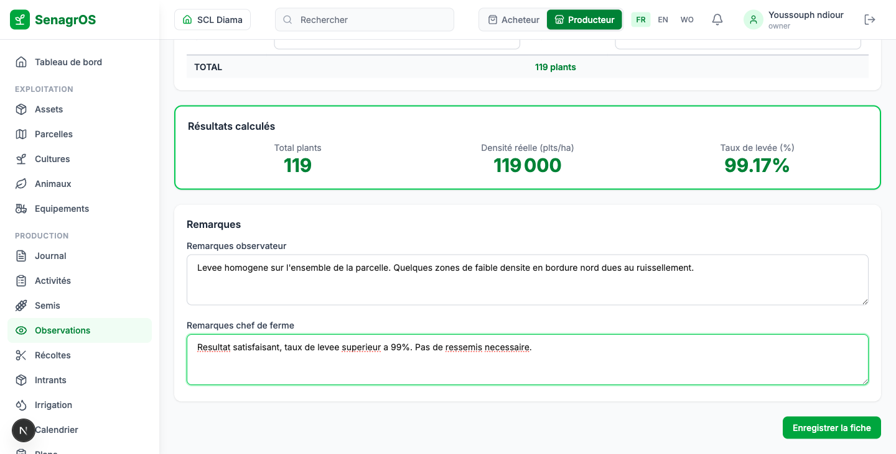
Fiche Maladies-Ravageurs
Grille d'observation complete avec 20 ravageurs et maladies pre-definis, 10 blocs d'echantillonnage, calcul automatique du pourcentage d'infestation et alerte quand le seuil de traitement est depasse.
- Cliquez sur + Ravageurs
- Selectionnez la parcelle, la culture et la variete
- Definissez le seuil de traitement (5% par defaut)
- Pour chaque bloc (B1 a B10), comptez les plants atteints par ravageur/maladie
- Le % infeste et l'alerte se calculent automatiquement
- Ajoutez vos preconisations de traitement
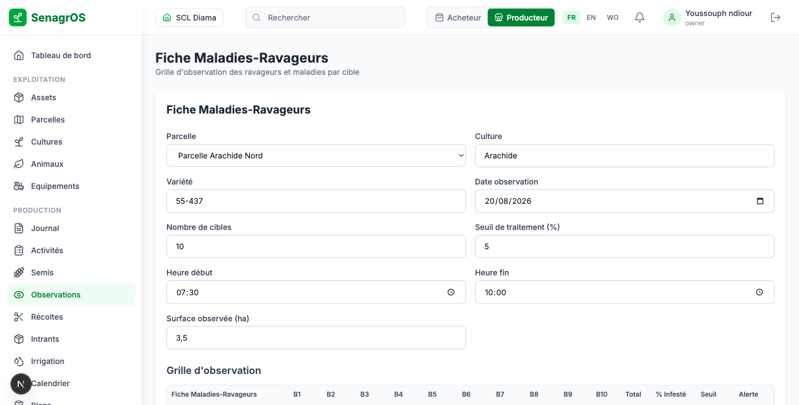
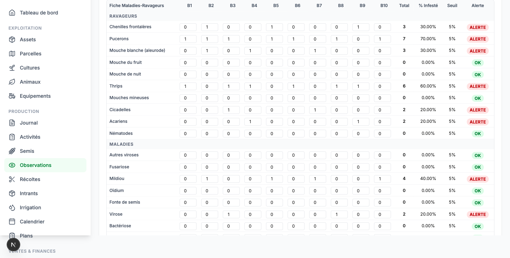
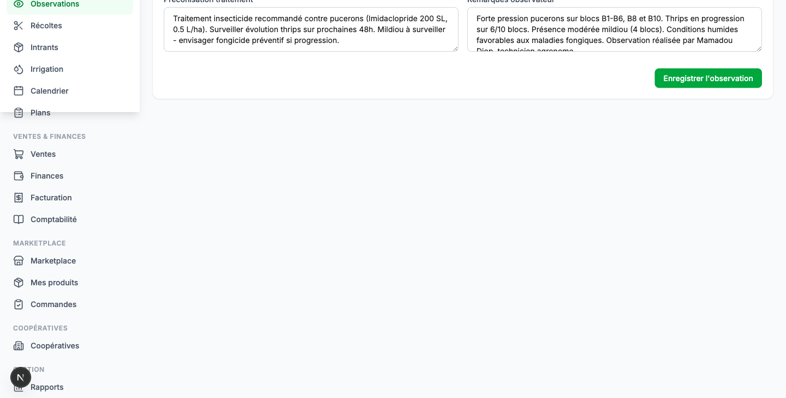
Suivi stade cultural
Enregistrez le stade phenologique atteint par vos cultures pour suivre leur progression.
- Cliquez sur + Stade
- Selectionnez le stade atteint dans la liste (Semis, Levee, Tallage, Floraison, Maturite...)
- Indiquez la date a laquelle le stade a ete atteint
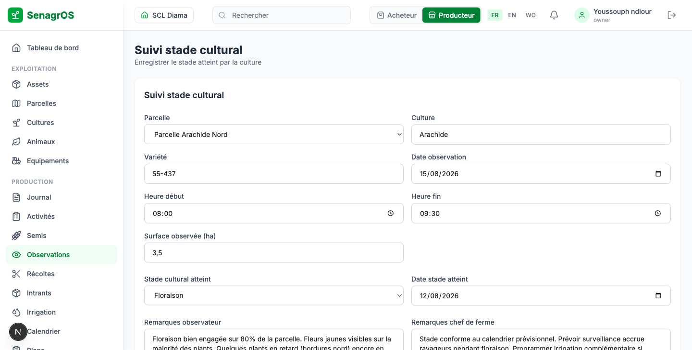
Agreage pre-recolte
Controle qualite avant recolte pour evaluer la conformite de la production aux criteres du marche.
- Cliquez sur + Agreage
- Selectionnez la parcelle et la culture
- Remplissez les criteres qualite (calibre, couleur, defauts, maturite)
- Indiquez la note globale et les remarques

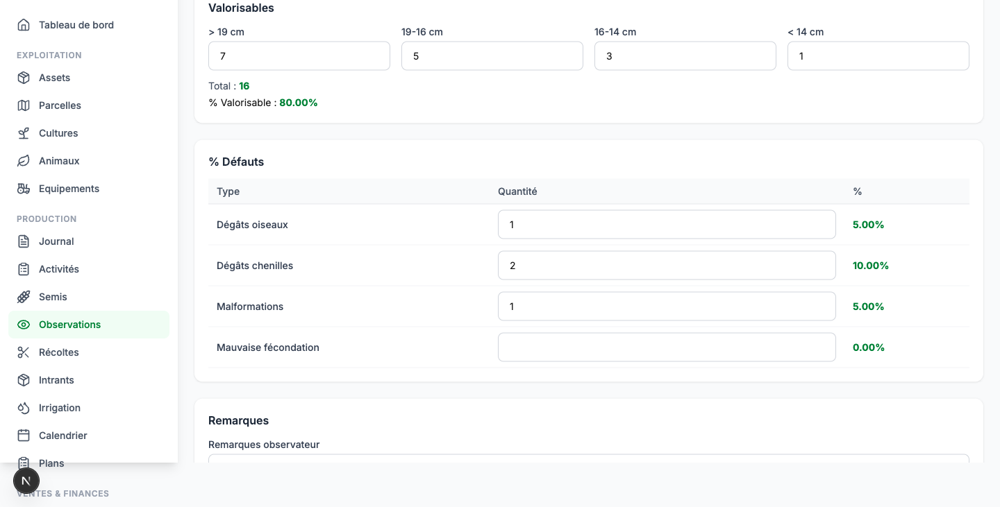
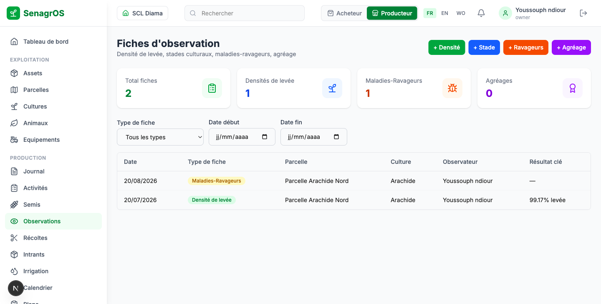
Calendrier
Vue calendaire de toutes les activites et interventions
Le calendrier affiche vos logs et taches planifiees dans une vue mensuelle interactive.

Creer un modele de calendrier cultural
Un modele definit les etapes du cycle d'une culture (semis, levee, tallage, floraison, maturite...) avec leur duree.
- Cliquez sur Templates puis + Nouveau modele
- Selectionnez le type de culture — les etapes se pre-remplissent automatiquement
- Ajustez les durees de chaque stade selon votre variete
- Ajoutez les actions a realiser a chaque stade (semis, desherbage, recolte...)
- Cliquez sur Enregistrer le modele
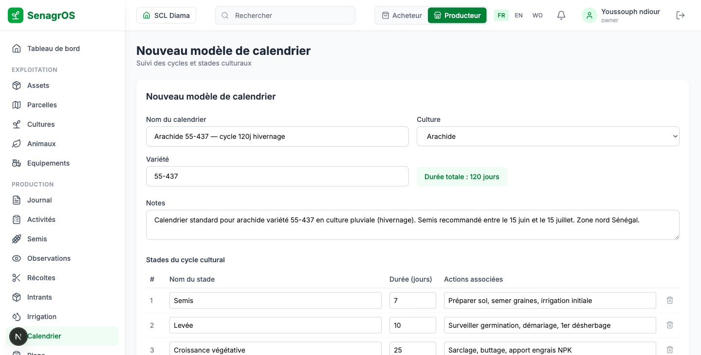

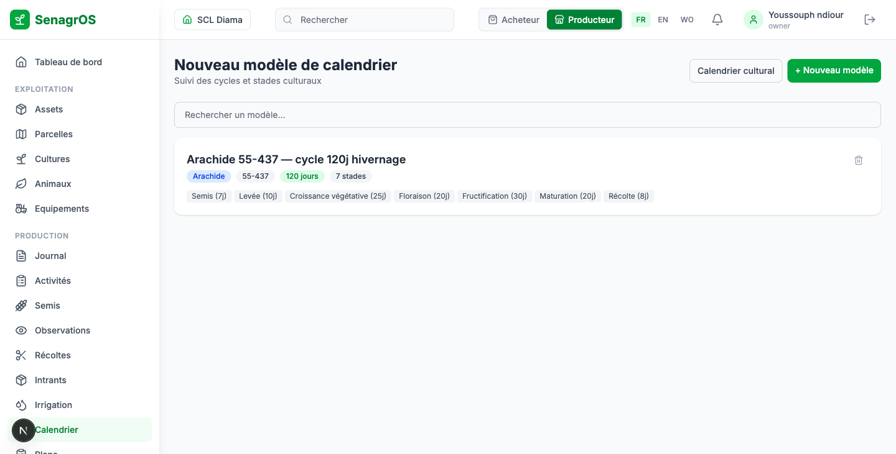
Assigner un calendrier a une parcelle
Une fois un modele cree, assignez-le a une parcelle avec une date de semis pour generer automatiquement les dates prevues de chaque stade.
- Cliquez sur + Assigner un calendrier
- Selectionnez la parcelle et le modele
- Indiquez la date de semis — les dates prevues se calculent automatiquement
- Verifiez l'apercu des dates puis cliquez sur Assigner

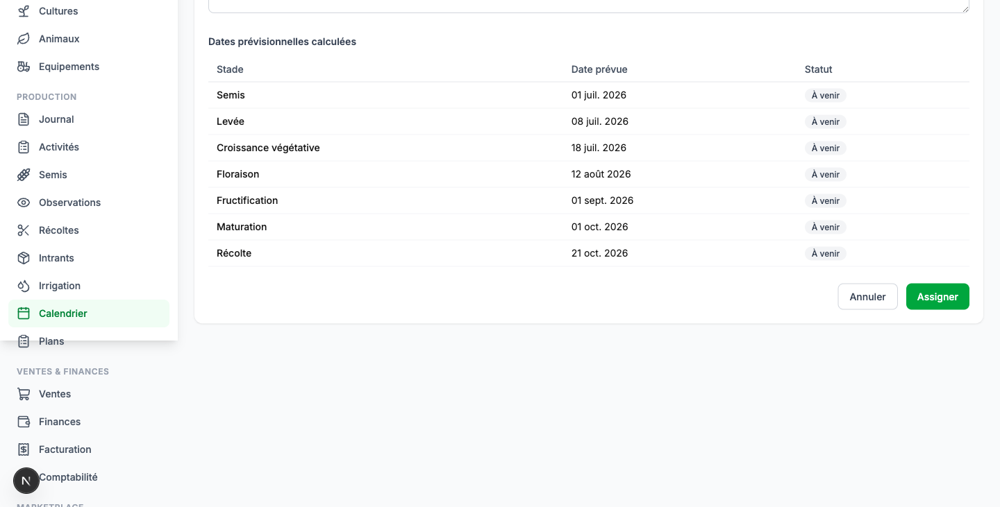
Plans de culture
Planifiez vos campagnes agricoles
Creez des plans de culture pour organiser vos campagnes par saison.

- Cliquez sur Nouveau plan
- Donnez un nom (ex: "Plan hivernage 2026")
- Selectionnez la saison : Hivernage (Jun-Oct), Contre-saison chaude (Mar-Jun), Contre-saison froide (Nov-Feb)
- Definissez les dates de debut et fin
- Ajoutez les cultures prevues et les parcelles associees
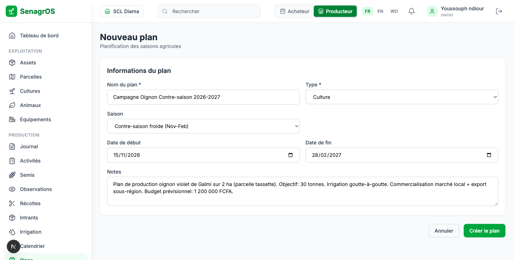
Recoltes
Enregistrement des recoltes avec rendement, qualite et destination
Enregistrer une recolte
- Allez dans Journal > Nouveau et selectionnez Recolte
- Remplissez les informations generales : nom, date, statut
- Dans la section Details recolte :
- Rendement (kg) : poids total recolte
- Rendement par ha (kg/ha) : rendement moyen
- Qualite : Grade A, B ou C
- Destination : acheteur ou usage (ex: SUNEOR SA Kaolack)
- Prix par kg (FCFA) : prix de vente unitaire
- Assignez les equipements et le personnel utilises
- Cliquez sur Creer le log


Ventes
Suivi du chiffre d'affaires et historique des transactions
La page Ventes affiche les KPIs financiers et l'historique des ventes.

Enregistrer une vente
- Cliquez sur + Nouvelle vente
- Remplissez le produit, la quantite, le prix unitaire en FCFA et l'unite
- Indiquez le client et le mode de paiement (Especes, Banque, Mobile Money)
- Le montant total se calcule automatiquement
- Cliquez sur Enregistrer
Facturation
Devis, pro formas et factures de vente
Gerez 3 types de documents : Devis, Pro forma et Facture.

Creer une facture
- Cliquez sur + Nouveau
- Selectionnez le type : Devis, Pro forma ou Facture
- Renseignez le client : nom, email, telephone
- Indiquez les dates d'emission et d'echeance
- Ajoutez les articles : produit/service, quantite, prix unitaire
- Le sous-total et le total se calculent automatiquement
- Ajoutez les taxes et notes si necessaire
- Cliquez sur Creer
Une fois creee, la facture est en statut Brouillon. Cliquez sur Payee pour la marquer comme reglee.
Finances
Vue d'ensemble financiere de l'exploitation
Le module Finances consolide toutes les donnees financieres : revenus, depenses, marges.

Comptabilite
Journal comptable et bilan de l'exploitation
Le module Comptabilite offre un journal comptable et un bilan simplifie adapte aux exploitations agricoles.

Rapports
Generation de rapports et analyses
Generez des rapports detailles sur vos activites, rendements, finances et performances.

Marketplace
Marche en ligne pour acheter et vendre des produits agricoles
Le Marketplace connecte producteurs et acheteurs. Recherchez des produits, filtrez par categorie et region.

Utilisez le switch Acheteur/Producteur dans la barre de navigation pour alterner entre les deux modes.
Mes produits
Gerez vos produits publies sur le marketplace
Publiez vos produits agricoles pour les vendre sur le marketplace. Suivez vos statistiques de CA.

Commandes
Gestion des commandes recues et passees
Suivez les commandes avec 2 onglets : Commandes recues (en tant que vendeur) et Commandes passees (en tant qu'acheteur).

Cooperatives
Gestion des cooperatives agricoles
Rejoignez ou creez une cooperative pour mutualiser les ressources et negocier les prix collectivement.

Notifications
Alertes et messages systeme
Les notifications vous informent des evenements importants : alertes de stock, taches planifiees, mises a jour du systeme.
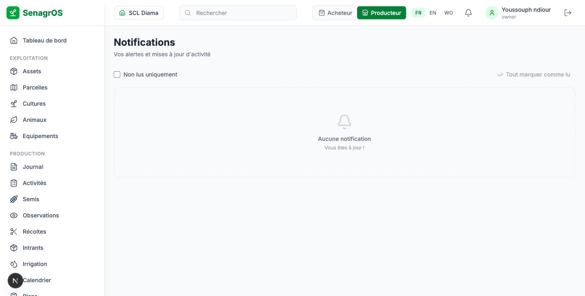
Le badge rouge dans la barre de navigation indique le nombre de notifications non lues.
Actions rapides
Saisie simplifiee pour les operations courantes
Les actions rapides permettent de saisir rapidement les operations les plus frequentes sans passer par le formulaire complet du journal.
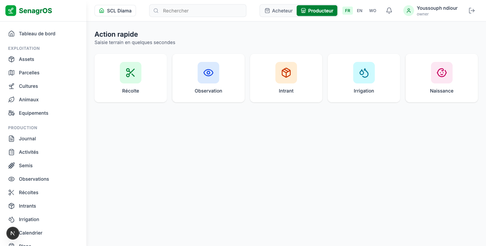
Actions disponibles
| Action | Description | Route |
|---|---|---|
| Recolte rapide | Enregistrer une recolte en 4 champs | /quick/harvest |
| Vente rapide | Saisir une vente directe | /quick/sale |
| Depense rapide | Enregistrer une depense | /quick/expense |
| Observation rapide | Noter une observation terrain | /quick/observation |
| Tache rapide | Creer une tache a realiser | /quick/task |
Workflow agricole complet
Le parcours logique de la preparation a la commercialisation
SenagrOS suit le cycle agricole naturel. Voici le workflow recommande :
| Etape | Module | Description | Exemple |
|---|---|---|---|
| 1. Foncier | Assets > Parcelles | Creer vos parcelles avec superficie et GPS | Parcelle Arachide Nord, 3.5 ha |
| 2. Culture | Assets > Cultures | Definir les cultures et varietes | Arachide 55-437, cycle 120j |
| 3. Materiel | Assets > Equipements | Inventorier le materiel | Semoir mecanique Super Eco |
| 4. Intrants | Intrants | Acheter et stocker les intrants | NPK 15-15-15, 500 kg |
| 5. Planification | Plans | Planifier la campagne | Plan hivernage 2026 |
| 6. Semis | Journal > Semis | Enregistrer le semis | Machine, 120 kg/ha, ecart 50x15cm |
| 7. Irrigation | Journal > Irrigation | Suivre les arrosages | Goutte-a-goutte, 14 000 L, 4h |
| 8. Maintenance | Journal > Maintenance | Entretenir le materiel | Revision semoir JD-1750, 175 000 FCFA |
| 9. Soin medical | Journal > Soin medical | Suivi sanitaire du cheptel | Vaccination fievre aphteuse, 12 tetes |
| 10. Observation | Observations | Evaluer les cultures | Densite levee : 99.17% |
| 11. Recolte | Quick > Recolte | Enregistrer les recoltes | 2 800 kg arachide Grade A |
| 12. Vente | Ventes | Vendre la production | SUNEOR SA, 350 FCFA/kg |
| 13. Facturation | Facturation | Emettre les factures | FAC-2026-0001, 700 000 FCFA |
- Hivernage (Juin — Octobre) : saison des pluies, cultures pluviales (mil, arachide, mais, riz)
- Contre-saison chaude (Mars — Juin) : cultures irriguees (tomate, oignon, gombo)
- Contre-saison froide (Novembre — Fevrier) : maraichage (chou, carotte, laitue)
Parametres regionaux
| Parametre | Valeur |
|---|---|
| Pays | Senegal |
| Devise | XOF (Franc CFA) |
| Fuseau horaire | Africa/Dakar (UTC+0) |
| Langues | Francais (defaut), English, Wolof |
| Unite de surface | Hectare (ha) |